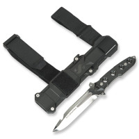

Das Equipment für Tauchen
| Name | Kann die Tauchschule bereitstellen | Ist Notwendig | Preis zum selbst Kaufen | Bild |
|---|---|---|---|---|
| Tauchermaske | Ja | Ja | 15,99€ bis 84,99€ |  |
| Tauchflossen | Ja | Ja | 29,99€ bis 100€ |  |
| Neoprenanzug | Ja | Kommt darauf an ob man im kalten oder warmen Gewässer Taucht |
40€ bis 119,99€ |  |
| Atemregler Set und Finimeter |
Ja | Ja | 338,99€ bis 1.019€ | |
| Tauchjacket | Ja | Ja | 232.33€ bis 445.57€ | |
| Taucherflasche | Ja | Ja | 175€ bis 470€ | |
| Taschenlampe | Nein | Nur bei Nachttauchgänen |
35,99€ bis 129,99€ |  |
| Tauchermesser | Nein | Selten | 39,99€ bis 653.01€ |  |
| Tauchcomputer | Nein | Nicht nötig, aber nützlich |
189€ bis 750€ |  |
| Taucherblei | Ja | Ja | 9,99€ pro Stück |
 |